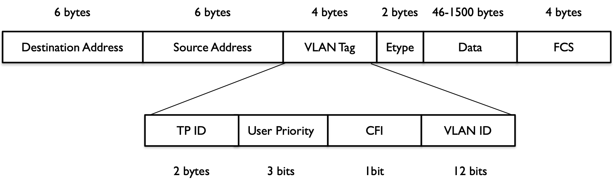

目录
L2基础知识
VLAN基础知识
VLAN定义
LAN表示Local Area Network，本地局域网，通常使用Hub和Switch来连接LAN中的计算机。一般来说，将两台计算机连入同一个Hub或者Switch时，它们就在同一个LAN中。同样地，你连接两个Switch的话，它们也是在同一个LAN中。一个LAN表示一个广播域，它表示，LAN中的所有成员都会收到LAN中一个成员发出的广播包。可见，LAN的边界在路由器或者类似的3层设备。
VLAN表示Virtual LAN。一个带有VLAN功能的Switch能够同时处于多个LAN中。最简单来说，VLAN是一种将交换机分成多个交换机的方法。
{kind=link}
例如，有两组机器，Group A和B。想配置组A的机器可以互相访问，B中的机器也可以互相访问，但是A组中的机器不能访问B组中的机器。可以使用两个交换机，两个组分别接到一个交换机。如果只有一个交换机，可以使用VLAN达到同样的效果。在交换机上分别配置连接组A和B的机器的端口为VLAN access ports。这样，这个交换机就只会在同一个VLAN的端口之间转发包。
IEEE 802.1Q标准定义了VLAN Header的格式。它在普通以太网帧结构的SA（src addr）之后加入了4 bytes的VLAN Tag/Header数据，其中包括12-bits的VLAN ID。VLAN ID最大值为4096，但是有效值范围是1-4094。

带VLAN的交换机端口分为两类：
Access Port：一个Access Port只支持一个VLAN。一个Access Port往往被分配一个VLAN ID。根据交换机的不同实现，有些交换机只能支持转发到Access Port的数据帧没有VLAN Tag，而有些支持数据帧中有VLAN ID Tag但是需要与端口的VLAN ID相同。离开交换机的Access Port然后进入计算机的以太帧没有VLAN Tag，这意味着连接到Access Port的机器不会察觉到VLAN的存在。
- 如果进来的数据帧没有VLAN Tag，它通过Access Port后，会被插入VLAN ID Tag。
- 如果进来的数据帧带有VLAN ID Tag并且与Access Port所分配的VLAN ID相同，那么它会被转发；如果不同，则会被丢弃。
Trunk Port：一个Trunk Port支持多个VLAN。它通常用于连接交换机。有多个交换机时，组A中的部分机器连接到Switch 1，另一部分机器连接到Switch 2。要使得这些机器能够互相访问，需要连接两台交换机。要避免使用一根电缆连接每个VLAN的两个端口，我们可以在每个交换机上配置一个VLAN Trunk Port。Trunk Port发出和收到的数据包都带有VLAN Header，该Header表明该数据包属于哪个VLAN。因此，只需要分别连接两个交换机的一个Trunk Port就可以转发所有的数据包了。通常来讲，只使用Trunk Port连接两个交换机，而不是用来连接机器和交换机，因为机器不想看到它们收到的数据包带有VLAN Header。有时候，如果一个机器需要发出带有不同VLAN ID的数据包，那么与它相连接的交换机的口也要被设置为Trunk Port。
VLAN的类型
Untagged VLAN
基于端口的VLAN（untagged VLAN - 端口属于一个VLAN，数据帧中没有VLAN Tag）
这种模式中，在交换机上创建若干个VLAN，再将若干个端口放在每个VLAN中。每个端口在某一时刻只能属于一个VLAN。一个VLAN可以包含所有的端口，或者部分端口。每个端口有个PVID（Port VLAN Identifier）。这种模式下，一个端口上收到的frame是untagged frame，因此它不包含任何有关VLAN的信息。VLAN的关系只能从端口的PVID上看出来。交换机在转发Frame时，只将它转发到相同PVID的端口。
{kind=link}
如上图所示，连接两个交换机的同一个VLAN中的两个计算机需要通信的话，需要在两个交换机之间连两根线：
- 一根从Switch A端口4到Switch B端口4（VLAN 1）
- 一根从Switch A端口8到Switch B端口8（VLAN 2）
Tagged VLAN
Tagged VLAN，数据帧中带有VLAN Tag。
这种模式下，Frame的VLAN关系是它自己携带的信息中保存的，这种信息叫A Tag或者Tagged Header。当交换机收到一个带VLAN Tag的帧，它只将它转发给具有同样VID的端口。一个能够接收或者转发Tagged Frame的端口称为A Tagged Port。所有连接到这种端口的网络设备必须是802.1Q协议兼容的。这种设备必须能处理Tagged Frame，以及添加Tag到其转发的Frame。
{kind=link}
在实际中VLAN配置的各种情况：
- 交换机的所有端口，部分是Tagged Port，部分被添加到VLAN中。
- 一个Untagged Port，不管它是一个基于的VLAN的成员还是一个Tagged VLAN中的成员，同一时刻只能在一个VLAN中。
- 一个Tagged Port，可以是多个VLAN的成员。
- 一个Port，可以同时是一个VLAN的Untagged成员，也可以是不同VLAN中的Tagged成员。
交换机端口类型
以太网端口有三种链路类型：Access、Hybrid和Trunk。
- Access类型的端口只能属于一个VLAN，一般用于连接计算机的端口。这种类型的端口允许接收没有打标签的帧，再发出去时将会被打上标签。
- Trunk类型的端口可以属于多个VLAN，可以接收和发送多个VLAN的报文，一般用于交换机之间连接的端口。在配置Trunk口时，可以指定允许接收的VLAN的ID区间，还可以配置一个Native VLAN（本征VLAN，缺省VLAN）。当设置了PVID（Natvie VLAN ID）时，没有打标签的进来的帧被打上PVID的Tag再被发出去。
- Hybrid类型的端口可以属于多个VLAN，可以接收和发送多个VLAN的报文，可以用于交换机之间的连接，也可以用于连接用户的计算机。Hybrid端口和Trunk端口的不同之处在于Hybrid端口可以允许多个VLAN的报文发送时不打标签，而Trunk端口只允许缺省VLAN的报文发送时不打标签。
各种类型
Access（接收）Tagged = PVID，不接收。部分高端产品可能接收。
Access（接收）Tagged != PVID，不接收。部分高端产品可能接收。
Access（接收）Untagged，接收，增加Tag=PVID。
Access（发送）Tagged = PVID，转发，删除Tag。
Access（发送）Tagged != PVID，不转发，不处理。
Access（发送）Untagged，无此情况。
Trunk（接收）Tagged = PVID，接收，不修改Tag。
Trunk（接收）Tagged != PVID，接收，不修改Tag。
Trunk（接收）Untagged，接收，增加Tag = PVID。
Trunk（发送）Tagged = PVID，如果通过则转发，删除Tag。
Trunk（发送）Tagged != PVID，如果通过则转发，不修改Tag。
Trunk（发送）Untagged，无此情况。
Hybrid（接收）Tagged = PVID，接收，不修改Tag，对端是Trunk。
Hybrid（接收）Tagged != PVID，接收，不修改Tag，对端是Trunk。
Hybrid（接收）Untagged，接收，增加Tag = PVID，类Trunk。
Hybrid（发送）Tagged = PVID，Tag和Untag中列出来的VLAN可以通过。
Hybrid（发送）Tagged != PVID，Tag和Untag中列出来的VLAN可以通过。
Hybrid（发送）Untagged，无此情况。
解释：
- 主机只能处理标出以太帧（没打标签的），交换机内部的帧都是打了标签的。
- 收报文：Access端口，收到一个报文，判断是否有VLAN信息：如果没有则打上端口的PVID，并进行交换转发，如果有则直接丢弃（缺省）。
- 发报文：Access端口，将报文的VLAN信息剥离，直接发送出去。
- 收报文：Trunk端口，收到一个报文，判断是否有VLAN信息：如果没有则打上端口的PVID，并进行交换转发，如果有判断该Trunk端口是否允许该VLAN的数据进入：如果可以则转发，否则丢弃。
- 发报文：Trunk端口，比较端口的PVID和将要发送报文的VLAN信息，如果两者相等则剥离VLAN信息，再发送，如果不相等则直接发送。
- 收报文：Hybrid端口，收到报文，判断是否有VLAN信息：如果没有则打上端口的PVID，并进行交换转发，如果有则判断该Hybrid端口是否允许该VLAN的数据进入：如果可以则转发，否则丢弃。
- 发报文：Hybrid端口，判断该VLAN在本端口的属性（disp interface即可看到该端口对哪些VLAN是Untagged，哪些VLAN是Tagged），如果是Untagged则剥离VLAN信息，再发送，如果是Tagged则直接发送。
| tagged（进） | untagged（出） | 出（交换机在做交换时，只会把帧发给包含其VID的端口） | |
|---|---|---|---|
| Access端口 | 丢弃 | 打上PVID | 剥离VID，此时的帧为标准以太网帧 |
| Trunk端口 | 如果是允许的，则不变；否则丢弃 | 打上PVID | 如果VID与PVID不同，则透传；如果VID与PVID相同，则剥离VID |
VLAN的不足
- VLAN使用12-bit的VLAN ID，所以VLAN的第一个不足之处就是它最多支持4096个VLAN网络（去除预留的有4094个），对于大型数据中心来书，这个数量远远不够。
- VLAN是基于L2的，所以很难跨越L2D的边界，在很大程度上限制了网络的灵活性。
- VLAN操作需手工介入较多，这对于管理成千上万台机器的管理员来说是难以接受的。
二层交换的基础知识
二层交换机最基本的功能
二层交换机的最基本的功能包括：
- MAC地址学习：当交换机从它的某个接口收到数据帧时，它将端口的ID和帧的源MAC地址保存到它内部的MAC表中。这样，当将来它收到一个要转发到该MAC地址的帧时，它就知道直接从该端口转发出去了。
- 数据帧转发：交换机在将从某个端口收到数据帧，再将其从某个端口转发出去之前，它会做一些逻辑判断：
- 如果帧的目的MAC地址是广播或者多播地址的话，将其从交换机的所有端口（除了传入端口）上转发。
- 如果帧的目的MAC地址在它内部MAC表中能找到对应的输出输出端口的话（MAC地址学习过程中保存的），将其从该端口上转发出去。
- 对其他情况，将其从交换机的所有端口（除了传入端口）上转发。
- 加VLAN标签/去VLAN标签：
- 帧接收：从Trunk Port上接收到的数据帧必须是加了Tag的。从Access Port上收到的数据帧必须是没有加Tag的，否则该帧将会被抛弃。
- 帧处理：根据上述转发流程决定其出发的端口。
- 帧发出：从Trunk Port发出的帧是加了Tag的。从Access Port上发送的数据帧必须是没有加Tag的。
ARP（Address Resolution Protocol）原理
二层网络使用MAC（Media Access Control Address）作为硬件的唯一标识。基于TCP/IP协议的软件使用ARP来将IP地址转化为MAC地址。
A的地址是10.0.0.2，B的地址时192.168.0.2。Router的Interface 1和A在同一个网段，其IP为10.0.0.1；Interface 2和B在同一个网段，其IP是192.168.0.1。A使用下面的步骤来获取Router的Interface 1的MAC地址。
- 根据其路由表，A上的IP协议知道需要通过上面配置的gateway 10.0.0.1才能到达B。经过上面的步骤，A会得到10.0.0.1的MAC地址。
- 当A收到Router Interface 1的MAC地址后，A发出了给B的数据包：
1
2
3
4SRC MAC: A的MAC地址
DST MAC: Router的Interface 1的MAC地址
SRA IP: A的IP
DST IP: B的IP - 路由器的Interface 1收到该数据包后，根据其路由表，首先经过同样的ARP过程，路由器根据B的IP地址获得其MAC地址，然后将包发给它。
1
2
3
4SRC MAC: Router Interface 2的MAC地址
DST MAC: B的MAC地址
SRA IP: A的IP
DST IP: B的IP
使用Open vSwitch（ovs）+ VLAN组网
Neutron基于VLAN模式的Tenant Network同Provider Network一样，都必须使用物理的VLAN网络。
物理VLAN网络配置
例子，交换机上划了三个VLAN区域：
- 管理网络，用于OpenStack节点之间的通信，假设VLAN ID范围为50 - 99。
- 数据网络，用于虚拟机之间的通讯。由于VLAN模式下，租户建立的网络都具有独立的VLAN ID，故需要将连接虚机的服务器的交换机端口设为Trunk模式，并且设置允许的VLAN ID范围，比如100 - 300。
- 外部网络，用于连接外部网络。加上VLAN ID范围为1000 - 1010。
关于网段之间的路由：
- 如果该物理交换机接到一个物理路由器并做相应的配置，则数据网络可以使用这个物理路由器，而不需要使用Neutron的虚拟路由器。
- 如果不使用物理的路由器，可以在网络节点上配置虚拟路由器。
Neutron配置
配置进行
控制节点
1 | # vim /etc/neutron/plugins/ml2/ml2_conf.ini |
网络节点上：
1 | # 为连接物理交换机的网卡eth2和eth3建立OVS Physical Bridge。 |
计算节点
1 | # 为连接物理交换机的网卡eth2建立OVS Physical Bridge |
重启相应的Neutron服务。
配置生效过程
当Neutron L2 Agent（OVS Agent或者Linux Bridge Agent）在计算节点和网络节点上启动时，它会根据各种配置在节点上创建各种Bridge。以OVS Agent为例。
- 创建Intergration Bridge（默认是br-int）；如果enable_tunneling = true的话，创建Tunnel Bridge（默认是br-tun）。
- 根据bridge_mappings，配置每一个VLAN和Flat网络使用的Physical Network Interface对应的预先创建的OVS Bridge。
- 所有虚机的VIF都是连接到Integration Bridge。同一个虚拟网络上的VM VIF共享一个本地VLAN（Local VLAN）。Local VLAN ID被映射到虚拟网络对应的物理网络的segmentation_id。
- 对于GRE类型的虚拟网络，使用LSI（Logical Switch Identifier）来区分隧道（Tunnel）内的租户网络流量（Tenant Traffic）。这个隧道的两端都是每个物理服务器上的Tunneling Bridge。使用Patch Port来将br-int和br-tun连接起来。
- 对于每一个VLAN或者Flat类型的网络，使用一个veth或者一个Patch Port来对接br-int和物理网桥，以及增加Flow Rules等。
- 最后，Neutron L2 Agent启动后会运行一个RPC循环任务来处理端口添加、删除和修改。管理员可以通过配置项polling_interval指定该RPC循环任务的执行间隔，默认是2秒。
Neutron虚拟路由
一个计算节点上的网络实例
{kind=link}
Neutron在该计算节点上做的事情：
- 创建了OVS Integration Bridge br-int。它的四个access ports中，两个打上了内部Tag 1，连接接入Network 1的两块网卡；另外两个端口的VLAN Tag为2。
- 创建了一对patch port，连接br-int和br-eth1。
- 设置br-int中的flow rules。对虚机过来的从access ports进入br-int的数据帧，会被加上对应的VLAN Tag，转发到patch port；从patch port进入的数据帧，将VLAN ID 101修改为1，102修改为2，再转发到相应的access ports。
- 设置br-eth1中的flow rules。从patch port进入的数据帧，将内部VLAN ID 1修改为101，内部VLAN ID 2修改为102，再从eth1端口发出。对从eth1进入的数据帧做相反的处理。